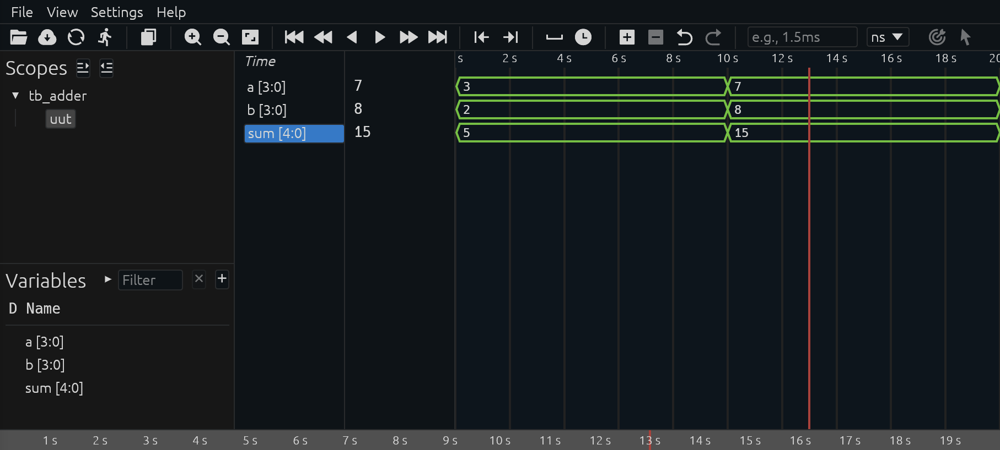
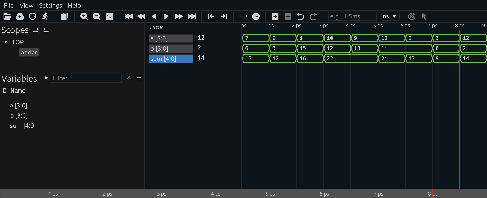

Simulações e Test Benches
Antes de implementar um circuito em FPGA ou ASIC, é fundamental testar seu funcionamento em simulação. Em Verilog, isso é feito usando um test bench, que nada mais é do que um código adicional não sintetizável, escrito para verificar o módulo que você deseja testar.
Considere o seguinte código para um somador de 4 bits:
| module adder(
input [3:0] a, b,
output [4:0] sum);
assign sum = a + b;
endmodule
|
Este código resulta em um somador simples de 4 bits, que pode ser sintetizado em hardware. Agora, vamos construir um test bench simples para testá-lo. O código do teste serve para simular o comportamento do somador, aplicando diferentes valores de entrada e observando a saída.
- O design, também chamado de Design Under Test (DUT) ou Unit Under Test (UUT) é o circuito que você escreveu, ele será instanciado dentro do test bench;
- O test bench gera estímulos (sinais de entrada, como clock, reset, dados) e observa as respostas do DUT;
- Dessa forma, você pode verificar se o circuito se comporta corretamente antes de gastar tempo e recursos na síntese e na gravação em hardware.
Exemplo simples de test bench para um somador:
| module tb_adder;
reg [3:0] a, b;
wire [4:0] sum;
adder uut (.a(a), .b(b), .sum(sum));
initial begin
a = 4'd3; b = 4'd2;
#10 a = 4'd7; b = 4'd8;
#10 $finish;
end
endmodule
|
Aqui o uut (unit under test) recebe valores, e a simulação permite observar se sum tem o resultado esperado.
DigitalJS
Um simulador simples, mas interessante para quem está começando é o DigitalJS. Nele você pode interagir gráficamente com o circuito gerado sem a necessidade de criar um test bench.
Icarus Verilog (iverilog)
O Icarus Verilog é um simulador Verilog de código aberto. Ele ainda não cobre todas as funcionalidades da linguagem, mas é bastante usado por sua simplicidade e facilidade de instalação.
Usando nosso exemplo do somador acima, podemos executar os seguintes comandos para realizar sua simulação e observar sua saída:
| % iverilog *.v && ./a.out
tb_adder.v:10: $finish called at 20 (1s)
|
Ele é capaz de identificar automaticamente a hierarquia entre a implementação e o test bench, mas apenas indica que a simulação terminou quando encontrou a função $finish. No entanto, ele não nos dá nenhuma informação útil da simulação, então vamos modificar o test bench para incluir uma chamadas às funções $display e $monitor. A primeira imprime uma única vez, então usamos para fazer um cabeçalho. A segunda, monitora os sinais e imprime sempre que um deles é modificado.
| module tb_adder;
reg [3:0] a, b;
wire [4:0] sum;
adder uut (.a(a), .b(b), .sum(sum));
initial begin
$display("Time\t a\t b\t sum");
$monitor("%3t\t%d\t%d\t%3d", $time, a, b, sum);
a = 4'd3; b = 4'd2;
#10 a = 4'd7; b = 4'd8;
#10 $finish;
end
endmodule
|
A saída agora nos mostra os valores dos sinais ao longo da simulação:
| % iverilog *.v && ./a.out
Time a b sum
0 3 2 5
10 7 8 15
tb_adder.v:12: $finish called at 20 (1s)
|
Embora a saída na console possa ser útil em alguns casos, podemos gerar também um arquivo do forma de onda (waveform) .VCD para explorar a simulação visualmente. Para isso, vamos incluir a função $dumpvars, que resulta na geração deste arquivo. Ele pode ser aberto usando um leitor como o GTKWave ou extensões do VSCode como WaveTrace ou surfer.

Para conhecer técnicas mais avançadas de simulação e testes, assista a esta sequência de vídeos sobre o assunto.
Verilator
O Verilator é o simulador de Verilog de código aberto mais rápido disponível atualmente. Diferente dos simuladores tradicionais "baseados em eventos" (como o ModelSim ou Icarus Verilog), o Verilator atua como um compilador que converte o hardware em modelos comportamentais de C/C++ altamente otimizados.
No exemplo a seguir, criamos um teste para estimular nosso somador com 10 pares de números aleatórios entre 0 e 15:
| #include <stdlib.h>
#include <iostream>
#include "verilated_vcd_c.h"
#include "verilated.h"
#include "Vadder.h"
int main(int argc, char **argv) {
Vadder *dut = new Vadder;
Verilated::traceEverOn(true);
VerilatedVcdC *m_trace = new VerilatedVcdC;
dut->trace(m_trace, 0);
m_trace->open("dump.vcd");
for (int i = 0; i < 10; i++) {
dut->a = rand() % 16;
dut->b = rand() % 16;
dut->eval();
m_trace->dump(i);
}
m_trace->close();
delete dut;
return 0;
}
|
No exemplo a seguir transformamos o arquivo adder.v em C/C++, o compilamos junto com o teste criado e o executamos para gerar o diagrama de forma de ondas.
| % verilator -Wall --trace -cc adder.v --exe --build tb_adder.cpp && obj_dir/Vadder
make: Entering directory '/srv/QuestIO42/tutoriais/code/verilog/adder/obj_dir'
g++ -I. -MMD -I/usr/local/share/verilator/include -I/usr/local/share/verilator/include/vltstd -DVERILATOR=1 -DVM_COVERAGE=0 -DVM_SC=0 -DVM_TIMING=0 -DVM_TRACE=1 -DVM_TRACE_FST=0 -DVM_TRACE_VCD=1 -DVM_TRACE_SAIF=0 -faligned-new -fcf-protection=none -Wno-bool-operation -Wno-int-in-bool-context -Wno-shadow -Wno-sign-compare -Wno-subobject-linkage -Wno-tautological-compare -Wno-uninitialized -Wno-unused-but-set-parameter -Wno-unused-but-set-variable -Wno-unused-parameter -Wno-unused-variable -Os -c -o tb_adder.o ../tb_adder.cpp
g++ tb_adder.o verilated.o verilated_vcd_c.o verilated_threads.o Vadder__ALL.a -pthread -lpthread -latomic -o Vadder
make: Leaving directory '/srv/QuestIO42/tutoriais/code/verilog/adder/obj_dir'
- V e r i l a t i o n R e p o r t: Verilator 5.043 devel rev v5.042-27-geafad9742
- Verilator: Built from 0.000 MB sources in 0 modules, into 0.000 MB in 0 C++ files needing 0.000 MB
- Verilator: Walltime 0.699 s (elab=0.000, cvt=0.000, bld=0.698); cpu 0.001 s on 1 threads; alloced 19.203 MB
|
Como boa parte do código Verilog escrito nos test benchs não é sintetizável, não faz diferença e pode até ser mais útil escrevê-lo em uma linguagem de programação, dependendo dos objetivos dos testes. Abaixo a simulação com as entradas aleatórias geradas via software.

Cocotb
cocotb (COroutine-based COsimulation TestBench) é uma ferramenta de código aberto usada para verificar designs de hardware (RTL) utilizando Python em vez das tradicionais linguagens de verificação como Verilog ou VHDL. Diferente das abordagens tradicionais onde o testbench roda inteiramente dentro do simulador, o cocotb conecta o interpretador Python ao simulador através de interfaces padrão como VPI (Verilog Procedural Interface), VHPI ou FLI. Isso permite que você escreva a lógica do teste em Python enquanto o simulador processa o código HDL.
O exemplo a seguir foi adaptado do projeto original para testar o nosso já conhecido somador. Primeiro descrevemos um golden model em Python para o nosso somador:
| def adder_model(a: int, b: int) -> int:
"""model of adder"""
return a + b
|
Depois escrevemos os testes propriamente ditos. O primeiro testa o somador com os valores 6 e 10 fixos:
| @cocotb.test()
async def adder_basic_test(dut):
"""Test for 6 + 10"""
A = 6
B = 10
dut.a.value = A
dut.b.value = B
await Timer(2, unit="ns")
assert dut.sum.value == adder_model(A, B), (
f"Adder result is incorrect: {dut.sum.value} != {adder_model(A, B)}"
)
|
O segundo teste injeta 10 pares de números aleatórios:
| @cocotb.test()
async def adder_randomised_test(dut):
"""Test for adding 2 random numbers multiple times"""
for _ in range(10):
A = random.randint(0, 15)
B = random.randint(0, 15)
dut.a.value = A
dut.b.value = B
await Timer(2, unit="ns")
assert dut.sum.value == adder_model(A, B), (
f"Randomised test failed with: {dut.a.value} + {dut.b.value} = {dut.sum.value} != {adder_model(A, B)}"
)
|
A partir de um Makefile, a ferramenta invoca o simulador e roda todos os testes comparando automaticamente os resultados:
| % make
rm -f results.xml
"make" -f Makefile results.xml
make[1]: Entering directory '/srv/QuestIO42/tutoriais/code/python/adder/tests'
/usr/local/bin/iverilog -o sim_build/sim.vvp -s adder -g2012 -f sim_build/cmds.f -s cocotb_iverilog_dump /srv/QuestIO42/tutoriais/code/python/adder/tests/../../../verilog/adder/adder.v sim_build/cocotb_iverilog_dump.v
rm -f results.xml
COCOTB_TEST_MODULES=test_adder COCOTB_TESTCASE= COCOTB_TEST_FILTER= COCOTB_TOPLEVEL=adder TOPLEVEL_LANG=verilog \
/usr/local/bin/vvp -M /home/menotti/.local/lib/python3.12/site-packages/cocotb/libs -m libcocotbvpi_icarus sim_build/sim.vvp -fst
-.--ns INFO gpi ..mbed/gpi_embed.cpp:93 in _embed_init_python Using Python 3.12.4 interpreter at /usr/bin/python3
-.--ns INFO gpi ../gpi/GpiCommon.cpp:79 in gpi_print_registered_impl VPI registered
0.00ns INFO cocotb Running on Icarus Verilog version 13.0 (devel)
0.00ns INFO cocotb Seeding Python random module with 1776432540
0.00ns INFO cocotb Initialized cocotb v2.0.1 from /home/menotti/.local/lib/python3.12/site-packages/cocotb
0.00ns INFO cocotb Running tests
0.00ns INFO cocotb.regression running test_adder.adder_basic_test (1/2)
Test for 6 + 10
FST info: dumpfile sim_build/adder.fst opened for output.
2.00ns INFO cocotb.regression test_adder.adder_basic_test passed
2.00ns INFO cocotb.regression running test_adder.adder_randomised_test (2/2)
Test for adding 2 random numbers multiple times
22.00ns INFO cocotb.regression test_adder.adder_randomised_test passed
22.00ns INFO cocotb.regression ******************************************************************************************
** TEST STATUS SIM TIME (ns) REAL TIME (s) RATIO (ns/s) **
******************************************************************************************
** test_adder.adder_basic_test PASS 2.00 0.00 2660.52 **
** test_adder.adder_randomised_test PASS 20.00 0.00 50472.97 **
******************************************************************************************
** TESTS=2 PASS=2 FAIL=0 SKIP=0 22.00 0.00 10002.05 **
******************************************************************************************
|